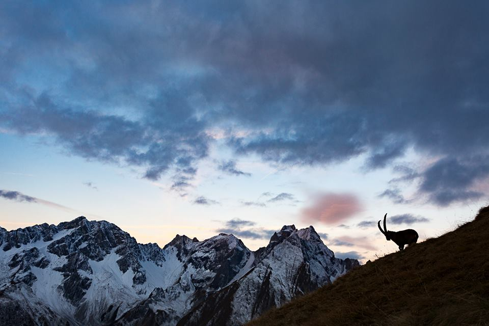

Warum ist Naturfotografie ein gutes Hobby?
Gründe warum Naturfotografie ein gutes Hobby ist:
- Man ist viel draussen unterwegs
- Es entstehen schöne Bilder
- Durch das Hobby Naturfotografie kann Geld verdient werden
- Reisen, reisen, reisen!
- Man kann bei nahezu jedem Wetter fotografieren und spannende Stimmungen festhalten, insbesondere am Morgen und am Abend
Liste mit dem wichtigsten Equipment:
- Kamera
- Objektive
- Stativ
- Kamerarucksack
- Wetterfeste Kleidung
- Rechner zum bearbeiten und Programme (Lightroom, Photoshop, etc.)
Website Reise- und Naturfotografie

Steinbock in den Lechtaler Alpen